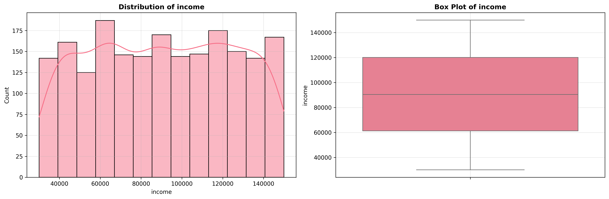

üîç Automated EDA Report
üìä Dataset Overview
2,000
Total Rows
8
Total Columns
5
Numeric Columns
2
Categorical Columns
0.0%
Missing Data
0
Duplicate Rows
üéØ Key Findings
Summary of Important Insights
- No missing data found - dataset is complete
- Dataset contains 5 numeric columns suitable for correlation analysis
üìà Column Information
| Column Name | Data Type | Non-Null Count | Missing % | Unique Values |
|---|---|---|---|---|
| name | object | 2,000 | 0.0% | 2,000 |
| city | object | 2,000 | 0.0% | 1,882 |
| income | int64 | 2,000 | 0.0% | 1,988 |
| credit_score | int64 | 2,000 | 0.0% | 537 |
| loan_amount | int64 | 2,000 | 0.0% | 1,968 |
| years_employed | int64 | 2,000 | 0.0% | 41 |
| points | float64 | 2,000 | 0.0% | 19 |
| loan_approved | bool | 2,000 | 0.0% | 2 |
üìä Numeric Statistics
| Column | Mean | Median | Std Dev | Min | Max | Skewness |
|---|---|---|---|---|---|---|
| income | 90585.98 | 90387.50 | 34487.87 | 30053.00 | 149964.00 | -0.01 |
| credit_score | 573.95 | 576.00 | 160.56 | 300.00 | 850.00 | 0.00 |
| loan_amount | 25308.50 | 25661.50 | 14207.32 | 1022.00 | 49999.00 | 0.01 |
| years_employed | 20.44 | 21.00 | 11.78 | 0.00 | 40.00 | -0.03 |
| points | 56.68 | 55.00 | 18.64 | 10.00 | 100.00 | 0.23 |
üìù Categorical Statistics
| Column | Unique Values | Most Frequent | Frequency |
|---|---|---|---|
| name | 2000 | Nicholas Cunningham | 1 |
| city | 1882 | North Joseph | 4 |
üìä Visualizations
The following visualizations have been generated for your dataset:
Data Overview
Missing Data Matrix
Missing Data Bar
Distribution Income
Distribution Credit Score
Distribution Loan Amount

Distribution Years Employed
Distribution Points
All Distributions
Correlation Heatmap
Pairplot

Outliers Income
Outliers Credit Score
Outliers Loan Amount
Outliers Years Employed
Outliers Points
� Additional Resources
Note: Additional detailed profiling reports may be available in the reports/ folder.